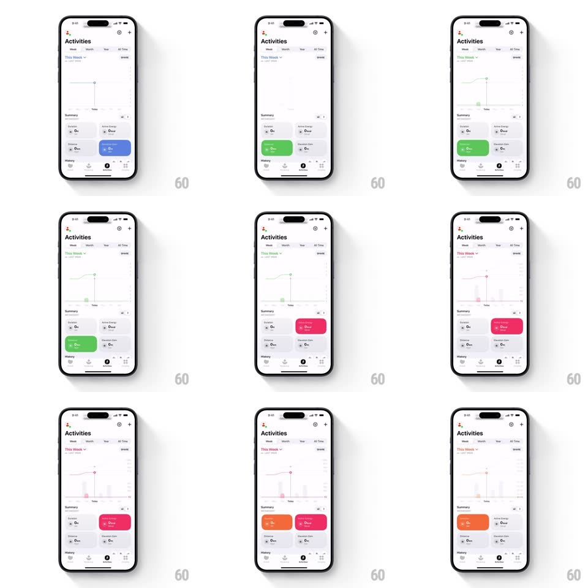

Media
Frame-by-frame

Rebuild this interaction 1:1: Gentler Streak's activities graph - switching summary cards redraws the line graph, which springs up from a flat baseline and re-colors to match the selected metric.

Rebuild this interaction 1:1: Gentler Streak's activities graph - switching summary cards redraws the line graph, which springs up from a flat baseline and re-colors to match the selected metric.
## Integration
Integration: stack-agnostic spec - springs given as stiffness/damping, timed motions as duration + curve; map every value to your framework and animation library of choice.
## Scene
An "Activities" screen: Week/Month/Year/All Time tabs, a "This Week" range picker, a line graph with a Today marker, and a 2x2 Summary grid of metric cards (Duration, Active Energy, Distance, Elevation). The selected card fills with its metric color (blue, green, pink, orange).
## Motion spec
Pattern: springy metric-switch graph morph.
- Tap a summary card: the card fills with its color (fill sweeps from the tap point, 250ms) and the previous card's fill drains (200ms); the graph line and its soft area fill crossfade to the new color (300ms).
- The graph morphs to the new metric by first collapsing to the flat baseline (points ease down, 200ms, ease-in) then springing up to the new data (spring ~180/16, points staggered left to right 15ms apart) - a visible overshoot and wobble settles over ~700ms.
- The Today marker line slides horizontally to its new position (spring ~360/24) with its dot trailing slightly (scale 0.8 to 1 pop on arrival).
- Y-axis labels crossfade to the new units; gridlines stay put.
- Tab switches (Week/Month/...) replay the collapse-and-spring with the new range's data; the range label ("This Week") crossfades.
## Calibration
- Collapse-then-spring is the signature: never lerp directly between two data shapes.
- Only the selected card carries color; all others stay flat white/gray.
## Reduced motion
Graph crossfades between metrics; no spring wobble.
## Don't miss
- The area fill under the line is a soft vertical fade of the line color - it follows the same spring.
- Card corner radius stays constant while the fill sweeps - the shape never morphs.